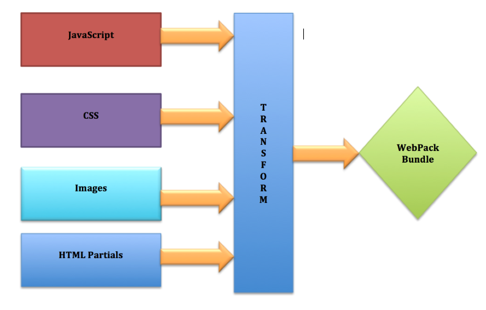

WEBPACK
made by Volha Makarevich
Agenda
- Overview of Webpack
- Advantages of using Webpack
- Example of configuration file
- Alternative
Overview
bundle your : scripts, images, styles, assets
Webpack
is an open-source JavaScript module bundler primarily for JavaScript, but it can transform front-end assets like HTML, CSS, even images if the corresponding plugins are included.
Advantages
- A lot of imports are included in webpack e.g commonjs, amd
- Webpack has watch mode
- Webpack can make several bundles
- Webpack can dynamically load
Advantages
Webpack install
npm install --global webpack
npm install --save-dev webpack-cli
Webpack install
webpack index.js bundle.js
index.js - input file
bundle.js - output file
Webpack.config.js file
Webpack.config.js file
Webpack.config.js file
Bundle file
Alternative
- Grunt
- Gulp
- Rollup
Grunt
not only bundle project but do other things, it is more like tasks runner. Grunt is heavier than Webpack

Gulp
If you need some basic bundling, just stick with Gulp, you don’t need to bother with Webpack. In other case use Webpack.

Rollup
“Use webpack for apps, and Rollup for libraries”
Webpack